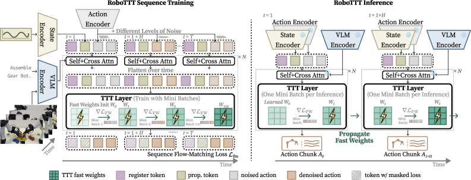
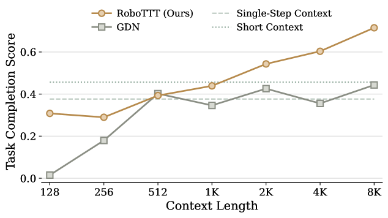

로봇 정책의 문맥 길이(context length) 자체를 스케일링 축으로 삼아, Test-Time Training(TTT)의 fast weight를 VLA(GR00T N1.7)의 DiT action head에 삽입해 시각-운동 문맥을 8,000 timestep(≈5분, SOTA 대비 3자릿수 확장)까지 늘리면서도 추론 지연은 늘리지 않는다. 이를 통해 (1) 인간 영상으로부터의 one-shot in-context 모방, (2) 추론 중 on-the-fly 정책 개선, (3) 외란 강건성을 얻는다. 실로봇 조립 3태스크 평균 완성도 79%로 단일 스텝 대비 +87%, 최고 베이스라인(GDN) 대비 +41%. 문맥 8K 사전학습은 1K 대비 +63% (71.5% vs 43.9%).
현재 로봇 파운데이션 정책 대부분은 단일 시점(또는 매우 짧은 히스토리)만 보고 행동한다. 데이터·모델·계산량은 스케일 축으로 활발히 탐구됐지만, 문맥 길이는 여전히 짧은 채로 남아 있었다. 문제는 단순히 트랜스포머 문맥을 늘리면 추론 지연과 메모리가 시퀀스 길이에 비례해 폭증한다는 점이다. 5분짜리 다단계 조립처럼 긴 시간지평 태스크에서는 과거의 조립 상태·이미 완료한 단계·최근 실패를 기억해야 하는데, 짧은 문맥 정책은 이를 유지하지 못한다.
저자들은 문맥 길이를 명시적 토큰 시퀀스가 아니라 fast weight(빠르게 갱신되는 파라미터)에 압축하는 Test-Time Training으로 해결한다. 과거 정보를 파라미터 공간에 눌러 담으므로 문맥이 길어져도 추론당 계산량은 상수로 유지된다.
TTT는 학습·추론 양쪽에서 gradient descent로 갱신되는 fast weight Wt를 도입해 문맥을 동적으로 모델링한다. 각 시점의 key/value로 내부 손실(MSE)을 최소화하도록 fast weight를 한 스텝 갱신하고(update: Wt ← Wt−1 − η∇WℒFW(fWt−1(Kt), Vt)), 갱신된 가중치로 query를 사상한다(apply: Ot=fWt(Qt)). 내부 학습률 η는 학습된다. fast model은 GeLU 2층 MLP(비선형)로, ablation에서 선형 fast model보다 27% 우수.
TTT 층을 DiT action head의 self-/cross-attention 뒤에 배치한다. attention은 시점 내부, TTT는 시점 간 정보를 처리하도록 역할을 나눈다. 시점마다 학습형 register token N=16개(Rt)를 prepend해 TTT의 시간 모델링을 돕고, Vision-Language 토큰 Φt는 계산 효율을 위해 TTT를 우회한다. 입력 시퀀스는 시점별로 [Rt, Φt, qt, Ãt]가 반복되는 구조. TTT 층당 약 10M 파라미터 추가(538M → 690M).
시퀀스 flow-matching 손실을 쓰되, 노이즈 레벨 τt를 청크마다 독립적으로 샘플링한다(τt=s(1−u), u~Beta(1.5,1), s=0.999). 전체 시퀀스에 동일 노이즈를 걸면 시퀀스 전체가 일률적으로 쉽거나 어려워져 학습이 불안정해지는 것을 방지한다. ablation에서 이 요소를 제거하면 학습 불안정으로 성능이 크게 저하.
시퀀스를 세그먼트로 나눠 세그먼트 내부에서만 gradient를 흘리고, 경계에서 gradient를 절단한다. 단, fast weight는 경계를 넘어 계속 이어져 TTT가 전체 시퀀스에 걸쳐 작동한다. 덕분에 GPU 메모리는 전체 길이가 아니라 세그먼트 길이로 결정되어 8K 문맥 학습이 가능.
| 방법 | Pup Go Car | Circuit | Gear Bot |
|---|---|---|---|
| RoboTTT | 9/20 | 13/20 | 2/10 |
| GR00T N1.7 | 3/20 | 3/20 | 0/10 |
| GR00T N1.7 Hist. | 0/20 | 8/20 | 0/10 |
| GDN | 3/20 | 8/20 | 0/10 |
완료도(rubric) 평균 RoboTTT 79% — 단일 스텝(42%) 대비 +87%, 최고 베이스라인 GDN(56%) 대비 +41%. 10단계·5분 조립 Gear Bot에서 완전 성공한 유일한 방법.
| 사전학습 문맥 | 128 | 1K | 8K |
|---|---|---|---|
| RoboTTT (평균 완료도) | 경쟁적이나 하위 | 43.9 | 71.5 |
문맥이 길수록 일관되게 상승, 포화 징후 없음. 8K는 1K 대비 +63%, 최고 단문맥 베이스라인 대비 +57%. 반면 GDN은 문맥을 늘려도 이득 없음.
| 방법 | 완료도 | 성공 rollout |
|---|---|---|
| RoboTTT | 65% | 6/10 |
| GDN | 33% | 0/10 |
동일 언어 프롬프트 하에 목표 형상은 인간 영상에서만 식별 가능. RoboTTT는 문맥의 인간 데모를 보고 미학습 형상을 재현.
| 방법 | Roof 교란 | Tire 교란 |
|---|---|---|
| RoboTTT | 15/20 | 18/20 |
| GR00T N1.7 | 10/20 | 11/20 |
| GR00T N1.7 Hist. | 3/20 | 5/20 |
| GDN | 13/20 | 18/20 |
실행된 모든 행동은 fast weight를 갱신하되 flow-matching 손실은 인간 교정(correction)에만 계산하는 방식. 동일 DAgger 데이터로 표준 DAgger(+9%)를 크게 상회하는 평균 +33% 개선(RoboTTT +36%, GDN +29%). 이를 통해 실패한 나사 조임을 팔을 들어 재시도해 성공하는 on-the-fly 회복을 학습(그림 11).


Figure 1: 개요 · Figure 3: tanh 게이팅 계산 흐름 · Figure 4: TBPTT · Figure 5: 평가 태스크(Pup Go Car / Circuit / Gear Bot).
여기서 시점(timestep)은 로봇 궤적의 한 타임스텝 t(한 관측→행동 스텝, ≈한 프레임)다. 각 시점 t는 여러 토큰 묶음으로 이뤄진다 — register 토큰 Rt(16개)·Vision-Language 토큰 Φt·proprioception qt·노이즈 액션 Ãt. 입력 시퀀스는 시점별로 [Rt, Φt, qt, Ãt]가 반복되는 구조.
정리하면 시점=한 타임스텝(프레임), attention=프레임 내부(공간) 정보, TTT=프레임들 사이(시간) 정보. 리스트의 WAM-TTT와 같은 TTT/fast-weight 계열이다.
fast weight = 매 순간 쓰고 읽는 작은 "연상 메모리"(GeLU 2층 MLP)다. "이런 단서(K)를 보면 이 정보(V)가 쓸모 있다"를 적어두고, 나중에 힌트(Q)로 꺼낸다. attention의 key/value/query와 같은 발상인데, 저장을 KV 캐시가 아니라 가중치에 한다.
매 시점 t 준비: 토큰 xt에서 (느린) projection으로 Kt=θKxt(단서)·Vt=θVxt(딸린 정보)·Qt=θQxt(질의) 세 개를 뽑는다.
① 쓰기(update): 현재 메모리 fWt−1에 Kt를 넣어 예측을 보고, 그게 Vt에 가까워지도록 딱 한 스텝 밀어 새 메모리 fWt를 만든다. 내부 손실 ℒFW=‖fWt−1(Kt)−Vt‖², 갱신 Wt←Wt−1−η∇WℒFW(η도 학습). 의미 = "앞으로 Kt 비슷한 단서가 오면 Vt를 내놓아라"를 써 넣는 것. 여기서 K와 V를 같게 만드는 게 아니라(둘은 같은 xt의 서로 다른 projection), K→V 연관을 저장한다.
② 읽기(apply): 방금 갱신한 fWt에 이번엔 Qt를 통과시켜 Ot=fWt(Qt)를 얻는다("사상"=그 MLP에 입력). 그동안 쌓인 (K→V)들 중 Qt와 닮은 key의 value를 섞어 돌려주는 검색(retrieval)이다 — attention의 "query가 key 조회→value 가중합"을 softmax·KV캐시 대신 MLP 실행으로 하는 것(linear-attention fW*(Q)∝Σ(kiTQ)vi와 동치). Ot는 tanh 게이팅(O=tanh(α)·OTTT+Oattn)으로 attention 출력과 합쳐진다.
표기 주의: fWt의 아래첨자 Wt는 "어느 시점의 가중치"(t에서 갱신된 버전), 괄호 (·)는 "입력". 그래서 쓰기 때 입력은 Kt, 읽기 때 입력은 Qt로 다르다.
시퀀스로 이어지면: t마다 [쓰기(Kt,Vt): Wt−1→Wt] → [읽기 Ot=fWt(Qt)]를 반복해, Wt 하나에 t까지의 과거 전체가 압축된다. 그래서 8,000 토큰을 다 들고 있지 않아도 긴 문맥을 참조한다. (예: t=5 "빨간 기어 집음(K)→왼쪽 축에 끼움(V)"을 써 두면, t=30에 "손에 기어·왼쪽 축 빔(Q)"으로 그 문맥을 꺼냄.)
추론 속도: 추론 때도 매 시점 1스텝씩 갱신한다. attention은 문맥에 비례해 비용이 커지지만, TTT는 과거를 파라미터에 눌러 담아 추론당 계산이 상수(8K여도 안 늘어남) — 추가 비용은 작은 fast model(층당 ~10M, 538M→690M)의 1스텝뿐. "지연을 늘리지 않고 문맥을 3자릿수 확장"이 핵심 주장. 이 안쪽 루프(fast weight 학습)는 flow-matching 액션 손실 같은 바깥 학습과 별개다. (리스트의 WAM-TTT의 KV 메모리 재구성과 같은 계열.)